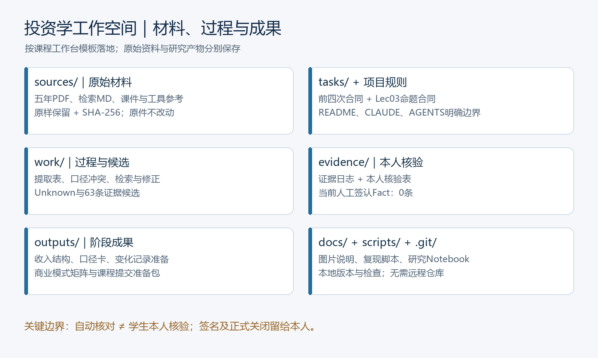

600519 · 贵州茅台 · 2020—2024年指定资料
资料、任务、过程、证据与版本在同一工作空间。建立日期2026-10-02。
outputs/first-analysis.md
outputs/revenue-structure-table.md
outputs/metric-scope-decision.md
outputs/change-verification-record.md
outputs/lec03-evidence-matrix.md
outputs/lec03-stage-deliverables.md

当前有效Fact为16条；Unknown为47条；已撤回0条；需重新核验0条。共63条候选。 日期自动按Asia/Shanghai记录。合同验收、复核人与正式签署另行完成。